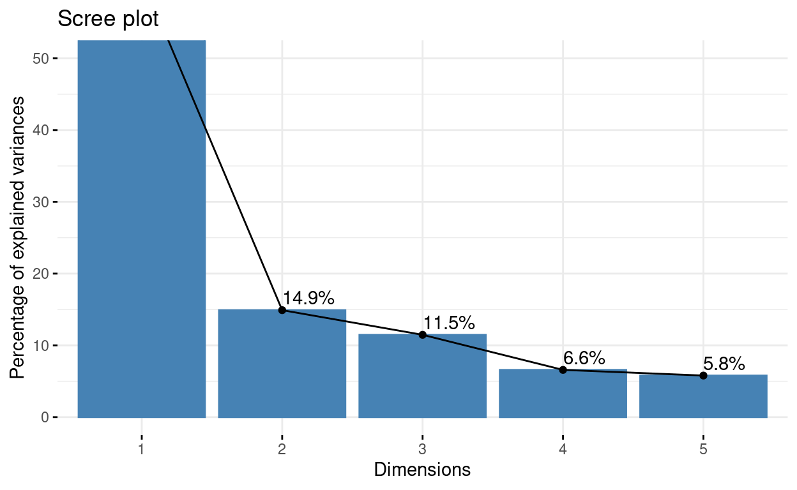
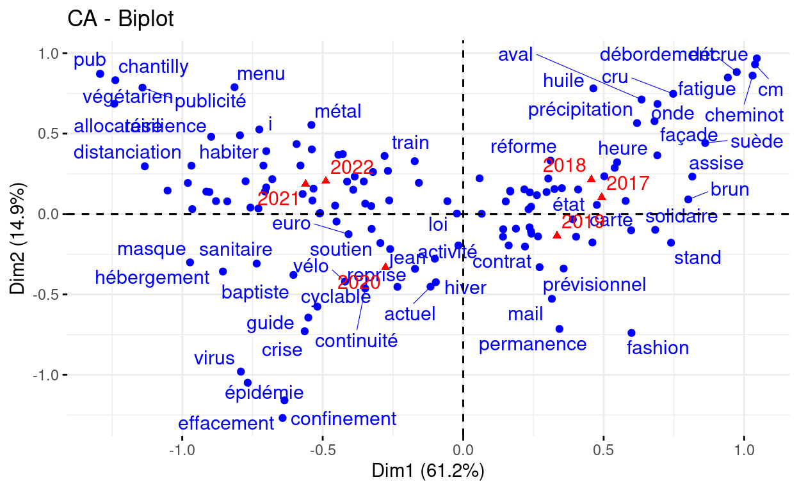

0) Introduction
 Cliquer
ici pour les diapos de cours
Cliquer
ici pour les diapos de cours
Ce document rassemble un certain nombre d’exercices, qui sont de deux types.
- Des exercices de type QCM.
- Des exercices de type code.
0_1) Exercices de code
Dans ce deuxième type d’exercice, vous pourrez modifier du code dans une fenêtre (fond jaune pâle) qui est l’équivalent d’un éditeur (très simplifié) de code R. Pour exécuter les lignes de code, vous pouvez vous placer dessus et faire Ctrl+Enter. Le résultat s’affichera dans une fenêtre (fond rose pâle) en-dessous qui est l’équivalent d’une console R.
a=33
b=29
a=___
aa=33
b=29
a=22
aLe code que vous entrerez peut être évalué automatiquement lorsque vous appuyez sur Submit solution.
L’évaluation porte usuellement sur la dernière commande écrite dans l’éditeur (celle écrite tout en bas!), ainsi que (plus généralement) sur le fait que le code ne génère pas d’erreur lors de son exécution.
Par exemple, l’exercice ci-dessus est paramétré pour être évalué
comme correct quand la dernière commande (donc d’après le code
pré-renseigné l’objet a) correspond à la valeur 22, et
incorrect autrement… Vous pouvez corriger (ou non) le code dans
l’éditeur pour tester le comportement de l’évaluation…
0_2) Exercices type “QCM”
1) Lecture d’un texte et constitution d’un corpus
(Séance 1)
1_1 Lecture d’un texte
Votre répertoire de travail comprend :
- un dossier
dataqui comprend lui-même- un sous-dossier
textesqui comprend lui-même- un certain nombre de textes dont un qui s’appelle “Lutte contre la précarité des femmes : Élisabeth Moreno et Emmanuelle Wargon se rendront à la Cité des dames (Paris-13) ce vendredi 14 janvier 2022 .txt”
- un sous-dossier
Complétez le code pour lire le texte contenu
dans ce fichier. Le résultat en question sera assigné à un
objet appelé texte.
Le package tidyverse a déjà été chargé dans
l’environnement ci-dessous.
titre="Lutte contre la précarité des femmes : Élisabeth Moreno et Emmanuelle Wargon se rendront à la Cité des dames (Paris-13) ce vendredi 14 janvier 2022 "
texte=read_file(___=paste0("data/textes/",___,".txt"))
print(texte)titre="Lutte contre la précarité des femmes : Élisabeth Moreno et Emmanuelle Wargon se rendront à la Cité des dames (Paris-13) ce vendredi 14 janvier 2022 "
texte=read_file(file=paste0("data/textes/",titre,".txt"))
print(texte)1_2) Lecture de plusieurs textes
1_2_a) Définition d’une fonction
Examinez cette fonction :
lit_texte <- function(titre,dossier="data/textes/"){
texte=readr::read_file(file=paste0(dossier,
titre,
".txt"))
return(texte)
}1_2_b) Execution en boucle avec `map()**
Exécutez la fonction lit_texte() de manière
itérative sur plusieurs textes, à partir de la liste des
titres, titres, et à l’aide de la fonction
map_chr() du package purrr.
Le package tidyverse et la table
tib_meta_N5 ont déjà été chargés dans l’environnement
ci-dessous.
tib_meta_N5 est un extrait (de taille 5) de la table des
métadonnées. La voici:
lit_texte <- function(titre,dossier="data/textes/"){
texte=read_file(file=paste0(dossier,
titre,
".txt"))
return(texte)
}
titres=tib_meta_N5$titre
textes=map_chr(.x=___,.f=___)lit_texte <- function(titre,dossier="data/textes/"){
texte=read_file(file=paste0(dossier,
titre,
".txt"))
return(texte)
}
titres=tib_meta_N5$titre
textes=map_chr(.x=titres,.f=lit_texte)1_3) Métadonnées
1_3_a) Travailler sur les métadonnées
Le package tidyverse et la table
tib_meta ont déjà été chargés dans l’environnement
ci-dessous.
La table des métadonnées tib_meta comprend un certain
nombre de descripteurs des textes, notamment la date de
publication (date) et le nom du
ministre (ministre) en exercice à ce moment.
Utilisez les fonctions de dplyr pour compter,
par ministre, le nombre moyen de communiqués par jour.
tib_meta %>%
group_by(___) %>%
summarise(ndocs=___,
datemax=max(date),
datemin=min(date),
duree=datemax-datemin) %>%
mutate(ndocsparjour=___/as.numeric(___))tib_meta %>%
group_by(ministre) %>%
summarise(ndocs=n(),
datemax=max(date),
datemin=min(date),
duree=datemax-datemin) %>%
mutate(ndocsparjour=ndocs/as.numeric(duree))1_3_b) Réunir métadonnées et textes dans une table
Nous allons maintenant modifier la table des métadonnées pour
y ajouter une nouvelle colonne qui comprendra les textes
eux-mêmes. Nous allons pour ce faire réutiliser les fonctions -
lit_texte() (définie auparavant) - map() (pour
itérer sur 5 textes)
En effet, pour ne pas surcharger le serveur et réaliser cette
opération rapidement nous allons effectuer ce calcul pour une
sous-partie du tableau correspondant aux 5 premières lignes de
tib_meta (tib_meta_N5).
Le package tidyverse et la table
tib_meta_N5 ont déjà été chargés dans l’environnement
ci-dessous.
lit_texte <- function(titre,dossier="data/textes/"){
texte=readr::read_file(file=paste0(dossier,
titre,
".txt"))
return(texte)
}
tib_docs_N5 <- tib_meta_N5 %>%
mutate(texte=___(.x=titre, .f=___))
tib_docs_N5lit_texte <- function(titre,dossier="data/textes/"){
texte=readr::read_file(file=paste0(dossier,
titre,
".txt"))
return(texte)
}
tib_docs_N5 <- tib_meta_N5 %>%
mutate(texte=map_chr(.x=titre, .f=lit_texte))
tib_docs_N52) Nettoyage du corpus
(Séance 1)
2_1) Recherches, filtres et nettoyages via l’usage de stringr
Le package tidyverse et la table
tib_meta_N5 ont déjà été chargés dans l’environnement
ci-dessous.
2_1_a) Recherche des ’
Il y a dans ce corpus des apostrophes correspondant à divers
encodages et/ou types de caractère (parfois ', parfois
’). Dans le texte suivant remplacez automatiquement toutes
les apostrophes ’ (penchées) par des apostrophes
' (droites).
Le package tidyverse et la table
tib_docs_N5 ont déjà été chargés dans l’environnement
ci-dessous.
texte="l’approvisionnement gazier de l’Europe"
___(texte,"’",___)texte="l’approvisionnement gazier de l’Europe"
str_replace_all(texte,"’","'")2_1_b) Intégration d’espaces à la suite des apostrophes en vue de la tokenisation
La fonction de tokenisation
unnest_tokens a été conçue par des anglophones… qui ne
gèrent pas correctement certains éléments de texte comme d’, l’, s’, qui
ne sont pas séparés des mots qu’ils précèdent par un espace. Ces
éléments se retrouvent donc accolés aux mots qui les suivent
comme s’il n’en constituaient qu’un (on se retrouve
alors avec des tokens comme par exemple “d’avoir”, “l’arrivée”, “s’est”,
etc.).
Intégrez des espaces à la suite des apostrophes dans l’ensemble des textes pour que la tokenisation se fasse de manière adéquate.
Le package tidyverse et la table
tib_docs_N5 ont déjà été chargés dans l’environnement
ci-dessous. On continue selon la même logique que l’exercice précédent,
sauf que cette fois on intègre les modifications directement à la
table.
tib_textes_N5 <- tib_docs_N5 %>%
mutate(texte=str_replace_all(texte,"’","'")) %>%
mutate(_________)tib_textes_N5 <- tib_docs_N5 %>%
mutate(texte=str_replace_all(texte,"’","'")) %>%
mutate(texte=str_replace_all(texte,"'","' "))2_2) Spécifier des patterns via l’usage d’expressions régulières
Pour les exercices de la partie 2_2, les packages dplyr
et stringr ont déjà été chargés dans l’environnement, ainsi
que l’objet echant_articles.
2_2_a) Recherche des majuscules
On recherche toutes les majuscules dans le texte.
Le package tidyverse a déjà été chargé dans
l’environnement ci-dessous.
texte="Et c'est ainsi que Georges Pig retrouva Monsieur Dinosaure"
str_extract_all(texte,"_______")texte="Et c'est ainsi que Georges Pig retrouva Monsieur Dinosaure."
str_extract_all(texte,"[:upper:]")2_2_b) Recherche de patterns plus complexes.
Examinez le code suivant:
texte="Boum. Et c'est ainsi que Georges Pig retrouva Monsieur Dinosaure."
resultat=str_extract_all(texte,"[:upper:][:lower:]*")Examinez le code suivant:
texte="Boum. Et c'est ainsi que Georges Pig retrouva Monsieur Dinosaure."
resultat=str_extract_all(texte,"(?<=[^[:punct:]]\\s)[:upper:][:lower:]*")2_2_c) Application à l’ensemble des textes
On cherche à détecter les sigles dans les textes, en considérant qu’ils correspondent vraisemblablement à un enchaînement de plusieurs majuscules (au moins 2).
extrait_sigles <- function(texte){
pattern=_____________
sigles <- str_extract_all(texte,pattern)
return(sigles)
}
___(.x=tib_docs_N5$texte,
.f=______)extrait_sigles <- function(texte){
pattern="[:upper:][:upper:]+"
sigles <- str_extract_all(texte,pattern)
return(sigles)
}
map(.x=tib_docs_N5$texte,
.f=extrait_sigles)3) Tokenisation et lemmatisation
(Séance 2)
Nous allons maintenant réaliser un certain nombre d’opérations sur
une table (réduite) comprenant 5 communiqués de presse:
tib_textes_N5.
Voici la table en question:
Pour les exercices de la partie 3, le tidyverse et le
package tidytext ont déjà été chargés dans l’environnement,
ainsi que l’objet tib_textes_N5.
3_1) Tokénisation
Procédez à la tokenisation des textes (un token = un mot).tib_mots_N5 <- _____________(tib_textes_N5,
output="mot",
input=____)
head(tib_mots_N5)tib_mots_N5 <- unnest_tokens(tib_textes_N5,
output="mot",
input="texte")
head(tib_mots_N5)3_2) Lemmatisation
Pour cet exercice, la table tib_mots_N5 fait déjà partie
de l’environnement.
library(mixr)
lexfr=get_lexicon("fr")
tib_lemmes_N5=tib_mots_N5 %>%
left_join(____, by="____") %>%
filter(!is.na(lemma))
head(tib_lemmes_N5)library(mixr)
lexfr=get_lexicon("fr")
tib_lemmes_N5=tib_mots_N5 %>%
left_join(lexfr, by="word") %>%
filter(!is.na(lemma))
head(tib_lemmes_N5)3_3) Retirer les mots-outils
On veut retenir seulement les noms, verbes et adjectifs (identifiés
dans la colonne type de lexfr comme
“nom”,“ver”,“adj”). Complétez le code ci-dessous pour filtrer la
table des lemmes et ne retenir que ces types grammaticaux.
Pour cet exercice, la table tib_mots_N5 fait déjà partie
de l’environnement.
library(mixr)
lexfr=get_lexicon("fr")
tib_lemmes_N5=tib_mots_N5 %>%
left_join(lexfr, by="word") %>%
filter(!is.na(lemma)) %>%
filter(___ %in% c(___,___,___))
head(tib_lemmes_N5, n=15)library(mixr)
lexfr=get_lexicon("fr")
tib_lemmes_N5=tib_mots_N5 %>%
left_join(lexfr, by="word") %>%
filter(!is.na(lemma)) %>%
filter(type %in% c("nom","ver","adj"))
head(tib_lemmes_N5, n=15)4) Graphiques descriptifs
(Séance 2)
4_1) Comptage des fréquences de lemmes
Quels sont les lemmes les plus fréquents dans le corpus? Complétez le code ci-dessous pour répondre à cette question.
Le package tidyverse et la table
tib_lemmes ont déjà été chargés dans l’environnement
ci-dessous.
tib_freq_lemmes <- tib_lemmes %>%
group_by(___) %>%
summarise(freq=___) %>%
arrange(desc(___))
head(tib_freq_lemmes,n=20)tib_freq_lemmes <- tib_lemmes %>%
group_by(lemma) %>%
summarise(freq=n()) %>%
arrange(desc(freq))
head(tib_freq_lemmes,n=20)4_2) Graphique en barres
On va représenter les fréquences d’occurrence des lemmes dans le corpus par un graphique en barre.
Pour faire les choses progressivement, commençons par un graphique qui n’est certes pas très joli, mais que l’on améliorera par la suite.
Complétez le code ci-dessous pour représenter les fréquences des lemmes dans le corpus. On montrera les fréquences en x et les lemmes en y.
Le tidyverse a déjà été chargé dans l’environnement,
de même que la table tib_freq_lemmes.
ggplot(tib_freq_lemmes %>% slice(1:20),
aes(x=___,y=___)) +
geom_bar(stat=___)ggplot(tib_freq_lemmes %>% slice(1:20),
aes(x=freq,y=lemma)) +
geom_bar(stat="identity")4_3) Graphique en barres joli
Nous allons maintenant arranger le graphique pour qu’il soit plus joli!
On souhaite notamment ordonner les lemmes non pas par ordre
alphabétique mais en fonction de leur fréquences. Pour cela on
utilisera une fonction du package forcats qui s’appelle
fct_reorder(). Allez chercher l’aide associée à cette
fonction pour voir comment l’utiliser!
ggplot(tib_freq_lemmes %>% slice(1:20),
aes(x=___,
y=fct_reorder(___,___))) +
geom_bar(stat="identity")+
xlab("lemme")ggplot(tib_freq_lemmes %>% slice(1:20),
aes(x=freq,
y=fct_reorder(lemma,freq))) +
geom_bar(stat="identity")+
xlab("lemme")4_4) Nuage de mots
Une des réalisations graphiques les plus classiques en terme de représentation de contenu textuel est le nuage de mots.
Réalisez le nuage des 100 lemmes les plus fréquents dans le corpus:
top_100 <- tib_freq_lemmes %>%
na.omit() %>%
top_n(___,___)
library(ggwordcloud)
ggplot(___, aes(label=___, size=___, color=log10(freq))) +
geom_text_wordcloud() +
theme_minimal()+
scale_color_gradient(low = "red", high = "forestgreen")top_100 <- tib_freq_lemmes %>%
na.omit() %>%
top_n(100,freq)
library(ggwordcloud)
ggplot(top_100, aes(label=lemma, size=freq, color=log10(freq))) +
geom_text_wordcloud() +
theme_minimal()+
scale_color_gradient(low = "red", high = "forestgreen")5) Analyses statistiques
(Séance 3)
(Séance 3)
5_1) Fréquences par partie
On définit une partition de notre jeu de données en deux périodes, pré et post covid. Examinez le code suivant:
tib_meta=tib_meta %>%
mutate(covid=case_when(date>lubridate::dmy("01-03-20")~"post",
date<=lubridate::dmy("01-03-20")~"pre")) %>%
mutate(covid=forcats::fct_relevel(covid,c("pre","post")))
tib_lemmes=left_join(tib_lemmes %>% select(-ministre),
tib_docs %>% select(-texte,-titre,-lien),
by="doc")5_2) Spécificités
Calculez les spécificités des lemmes en lien de la partition
du corpus par la variable covid.
Le tidyverse et le package mixr ont
déjà été chargés dans l’environnement, de même que la table
tib_lemmes (qui comprend la variable
covid).
tib_spec=mixr::______(_____,lemma,____) %>%
arrange(desc(spec))
head(tib_spec, n=15)tib_spec=mixr::tidy_specificities(tib_lemmes,lemma,covid) %>%
arrange(desc(spec))
head(tib_spec, n=15)5_3) Barplot des spécificités
On va maintenant représenter les termes les plus spécifiques de chaque partie du corpus (pré-covid vs post-covid).
Complétez le code ci-dessous pour produire un graphique comportant deux facettes (avant et après covid) et représentant en x les spécificités et en y les 20 lemmes les plus spécifiques de chaque partie
Le tidyverse et le package mixr ont
déjà été chargés dans l’environnement, de même que la table
tib_lemmes_covid.
tib_spec=mixr::tidy_specificities(tib_lemmes,lemma,covid) %>%
mutate(covid=forcats::fct_relevel(covid,c("pre","post")))
tibg_spec=tib_spec %>%
group_by(covid) %>%
slice_max(___,n=__)
ggplot(____,
aes(x=____,y=forcats::fct_reorder(_____,____),fill=covid))+
geom_bar(stat="identity")+
__________(rows=vars(____), scales="free")+
ylab("lemme")tib_spec=mixr::tidy_specificities(tib_lemmes,lemma,covid) %>%
mutate(covid=forcats::fct_relevel(covid,c("pre","post")))
tibg_spec=tib_spec %>%
group_by(covid) %>%
slice_max(spec,n=20)
ggplot(tibg_spec,
aes(x=spec,y=forcats::fct_reorder(lemma,spec),fill=covid))+
geom_bar(stat="identity")+
facet_grid(rows=vars(covid), scales="free")+
ylab("lemme")5_4) Occurrence d’un champ lexical
Examinez le code suivant:
tib_ferroviaire=tib_docs %>%
mutate(ferroviaire=str_count(texte,"SNCF|train|ferroviaire|cheminot|chemin de fer"))Voici le genre de sortie graphique que l’on pourrait construire suite à ce genre de recherche:
ggplot(tib_ferroviaire,
aes(x=date,y=ferroviaire,col=ministre))+
geom_bar(stat="identity")## Warning: Removed 83 rows containing missing values (`position_stack()`).5-5) Structural Topic Modelling
## [1] 2866 5445_6) Analyse factorielle des correspondances
Réalisons l’analyse factorielle des correspondances en partitionnant le corpus en fonction de l’année.
# lemmes hautement spécifiques d'une partie ou d'une autre
lemmes_spec=mixr::tidy_specificities(tib_lemmes,lemma,year) %>%
arrange(desc(spec)) %>%
filter(spec>10) %>%
pull(lemma) %>%
unique()
# table avec lemmes hautement spécifiques
tib_hspec=tib_lemmes %>%
filter(lemma %in% lemmes_spec)
# table lexicale
tib_lex=table(tib_hspec$lemma,tib_hspec$year)library(FactoMineR)
result_CA=CA(tib_lex, graph=FALSE)
library(factoextra)
fviz_screeplot(result_CA, addlabels = TRUE, ylim = c(0, 50))library(FactoMineR)
result_CA=CA(tib_lex, graph=FALSE)
library(factoextra)
fviz_screeplot(result_CA, addlabels = TRUE, ylim = c(0, 50))
fviz_ca_biplot(result_CA, repel=TRUE)## Warning: ggrepel: 55 unlabeled data points (too many overlaps). Consider
## increasing max.overlaps